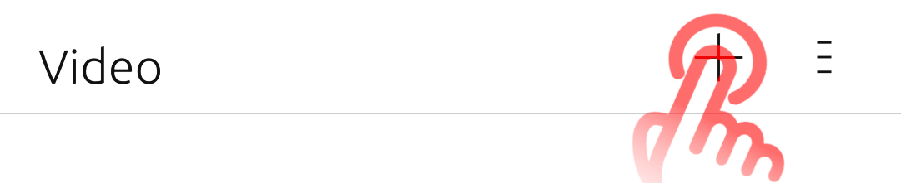
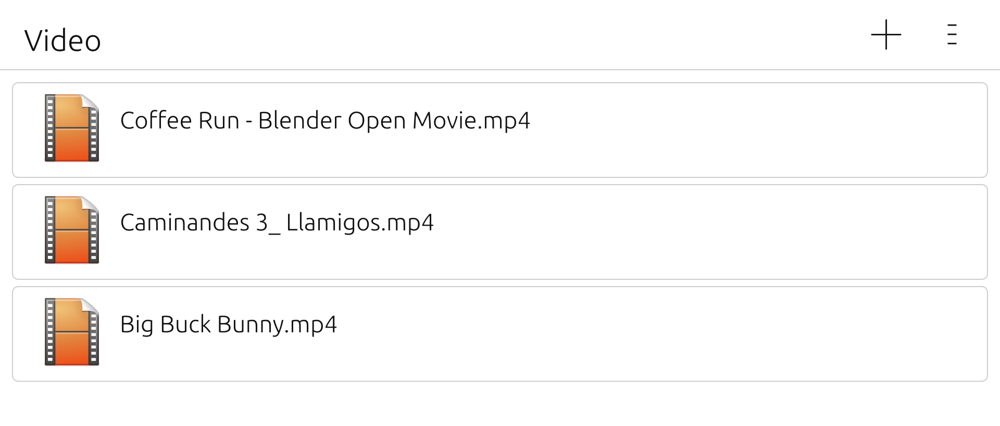
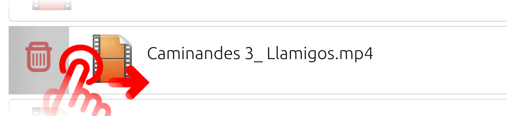
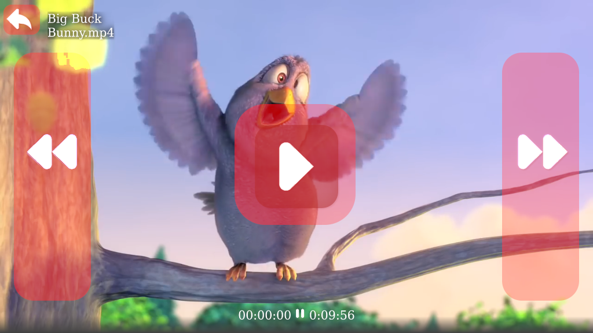

Druk rechtsboven op de '+'-knop om een videobestand toe te voegen. De video wordt automatisch afgespeeld.
Voor het afspelen wordt gebruikgemaakt van Morph-webbrowser. Hiermee wordt voorkomen dat het bestand niet kan worden afgespeeld op sommige apparaten omdat de processor geen ondersteuning heeft voor decoderen.
De speler ondersteunt .mp4-, .ogv- en .webm-videobestanden die gebruikmakent van h.264-codecs.
Het hoofdscherm van de app bevat een afspeellijst met videobestanden. De lijst wordt na afsluiten automatisch opgeslagen, dus je hoef bestanden slechts eenmalig toe te voegen(de cache wordt gewist zordra je je telefoon herstart)
Je kunt meerdere bestanden tegelijk toevoegen; er wordt dan vanaf het eerste bestand doorgespeeld.
Veeg naar rechts over een bestand en druk op het prullenbakpictogram om een bestand te verwijderen. Hiermee verwijder je alleen bestanden van de lijst en niet van je apparaat.
Als je deze app graag gebruikt, dan kun je me ondersteunen via LiberaPay. Je donaties helpen en motiveren mij om vrije en opensource-apps te blijven maken.